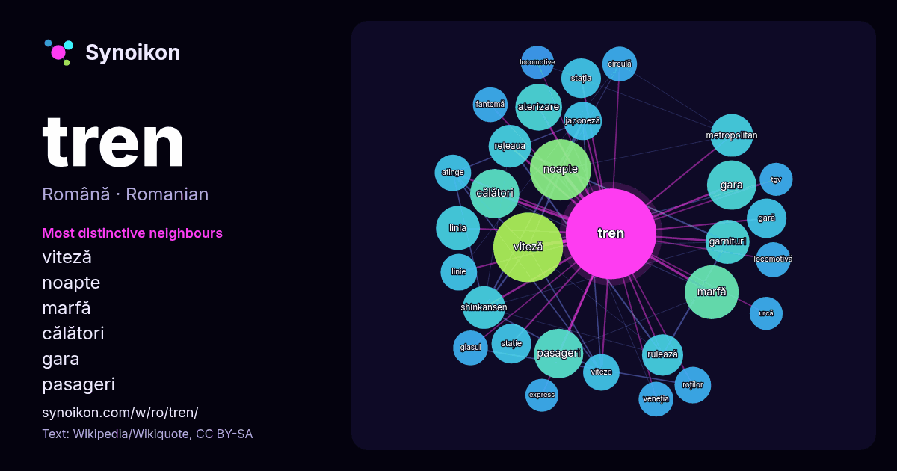

Română · lista cuvintelor zilei
tren
“train” · Cuvintele găsite în jurul lui în 818 apariții de pe Wikipedia, Wikiquote.

Cei mai specifici vecini
- viteză 33×
- noapte 25×
- marfă 23×
- călători 19×
- gara 19×
- pasageri 18×
- aterizare 18×
- garnituri 17×
- shinkansen 16×
- metropolitan 16×
- rulează 14×
- rețeaua 14×
- gară 13×
- stație 13×
- stația 12×
- roților 12×
- linia 12×
- japoneză 12×
- viteze 11×
- fantomă 11×
× = de câte ori mai des decât în textul general de pe Wikipedia.
Cei mai frecvenți vecini
- viteză 40
- noapte 31
- într-un 28
- marfă 24
- călători 20
- gara 20
- pasageri 20
- aterizare 18
- garnituri 16
- linia 16
- metropolitan 15
- rețeaua 15
- shinkansen 15
- film 14
- rulează 14
- gară 13
- stația 13
- stație 13
- aur 12
- bucurești 12
În context
- Un tren constă din unul sau mai multe vehicule pe șine conectate între ele, capabile să transporte marfă sau persoane pe o rută prestabilită. Propulsia Wikipedia snippets · Tren
- Un tren de pasageri este un tren destinat transportului de persoane, fiind, de obicei, mai scurt și mai rapid decât un tren de marfă. El poate fi format Wikipedia snippets · Tren de pasageri
- Așteptînd un tren este un film românesc din 1982 regizat de Mircea Veroiu. Rolurile principale au fost interpretate de actorii Maria Ploae, Mircea Diaconu Wikipedia snippets · Așteptînd un tren
- Străini în tren (în engleză Strangers on a Train) este un film de dragoste noir american din 1951 regizat de Alfred Hitchcock. În rolurile principale joacă Wikipedia snippets · Străini în tren
- Sintagma tren fantomă se poate referi la: Tren fantomă (entitate spirituală), eveniment paranormal Tren fantomă (distracție), tip de cursă în parcurile Wikipedia snippets · Tren fantomă
- Tren spre Busan (coreeană 부산행, transliterat: 釜山行, Busanhaeng) este un film sud-coreean thriller de acțiune de groază de zombi scris și regizat de Yeon Wikipedia snippets · Tren spre Busan
- Un tren de marfă este un tren ce transportă diferite mărfuri, în vagoane speciale numite containere. În esență, orice tren ce nu transportă pasageri este Wikipedia snippets · Tren de marfă
- Un tren regional, cunoscut ca și tren local este un serviciu de pasageri care operează între orașe. Acestea fac mai multe opriri și sunt mai lente decât Wikipedia snippets · Tren regional
Mai multe cuvinte
Precalculat la 2026-10-09 cu setările implicite (±5 cuvinte, corpus mediu). Harta interactivă îl poate actualiza cu date live.
Interfață tradusă automat; corecturile sunt binevenite.